High-Voltage Solid-State Circuit Breaker
Power Board Design
This is an RLC solid-state circuit breaker prototype for a modular solid-state circuit breaker system. It is designed for 400–500 V and modeled for a 100 A fault current. The active components are the seven gate driver boards, discussed below, which are controlled by an Arduino Nano for testing. The premise is that a large current is injected into the circuit using a capacitor bank while the circuit is powered. The current is then forced into another capacitor bank path by turning on two silicon-carbide cascode FETs. As the capacitor voltage charges, the current in the inductive path at the source end of the circuit depletes. When the current reaches zero, the path to the capacitor bank is closed off to the rest of the circuit. The capacitor is then discharged through a resistor, completely isolated from the rest of the circuit. The gate drives turn off to allow normal function through the power board.
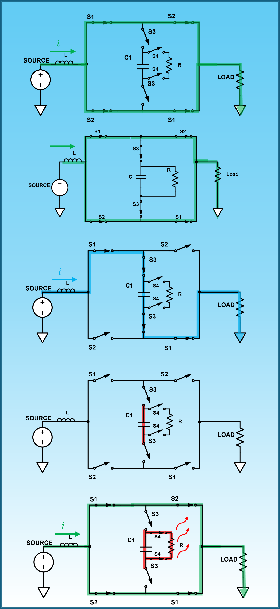
Starting from an equivalent circuit provided by the lab, I derived the RLC equations and used Python sweeps over L, C and the parallel resistance to find an inductor/capacitor pair in which the inductor current is zero when the capacitor voltage is at its peak. This allows for zero-current switching (ZCS), which reduces switching losses and stress on the switches. As can be seen in the LTspice plots below, the capacitor voltage (V(N006, N007)) is at its maximum when the inductor current (I(L1)) crosses zero. In simulation the current at the crossing is on the order of microamps rather than exactly zero, but the switching loss should be small because the breaker switches once per event rather than continuously, as in a buck, boost, or combination converter.
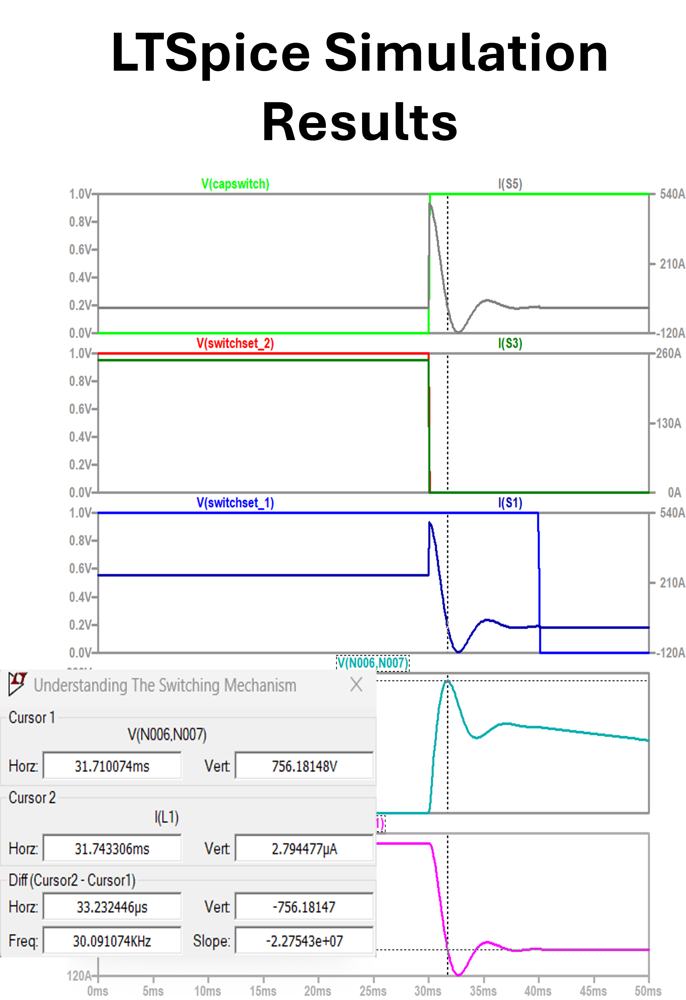
The KiCad PCB layout was relatively straightforward. It is a 4-layer board with minimal traces and large copper planes. I used planes to keep loop inductance low: extra inductance from traces would shift the inductor's zero-crossing time away from the simulation. The parallel planes also add some parasitic capacitance, which I have not yet measured or checked against the timing.

As with all first tries, something usually goes wrong. When constructing the PCB in KiCad I had to make a fair portion of my own footprint libraries. For one, I didn't take into account tolerances for the component leads for both the 16 capacitors and power resistor. I also entered the wrong footprint sizes for the capacitors. It was quite a shock when the board came in and not only did the capacitor leads not fit, but the capacitors themselves couldn't fit next to each other. I came up with the idea to alternate them on the top and bottom of the board, as vertical orientation doesn't matter. It turned out to be a good workaround, as the caps acted as natural standoffs for the board. To get the caps soldered to the board, I Dremeled the casing away from the leads, then lap-soldered smaller-gauge wires onto each of the 64 capacitor leads as close to the capacitor body as possible. After a long evening, the efforts turned out to work well! (And saved me from major disappointment from my research professor.)


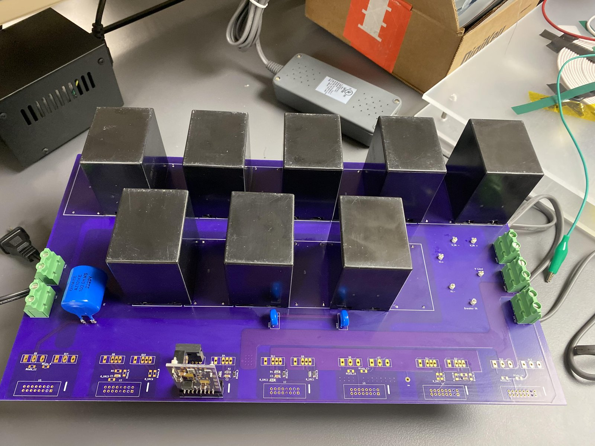
Gate Drive & Troubleshooting
The gate drive board came with its own array of problems. I had used an application circuit configuration incorrectly, soldered 100 Ohm 0603 resistors onto a path requiring 10 Ohm, and used an inverted footprint for an NPN transistor. Troubleshooting involved better understanding the application circuit, tracing the signal paths with a DMM to find voltage discrepancies, and lots of advice from my advisor and a PhD student. Fixing the problems posed their own challenges. For the transistor, I bent the pins, stood it up as if it had feet, and soldered magnet wire from the transistor to the pad. I also had to lift pins from one of the ICs and use magnet wire to tie them to connector pins.


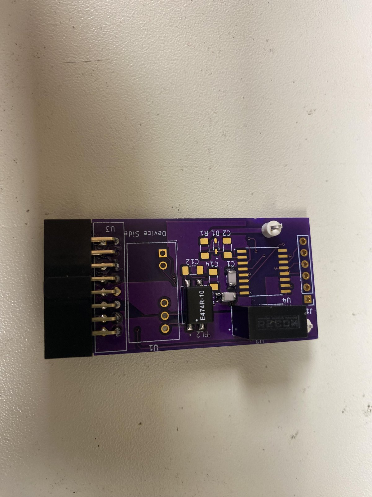
Seven gate-drive boards were completed after these corrections. The photos below show the changes.
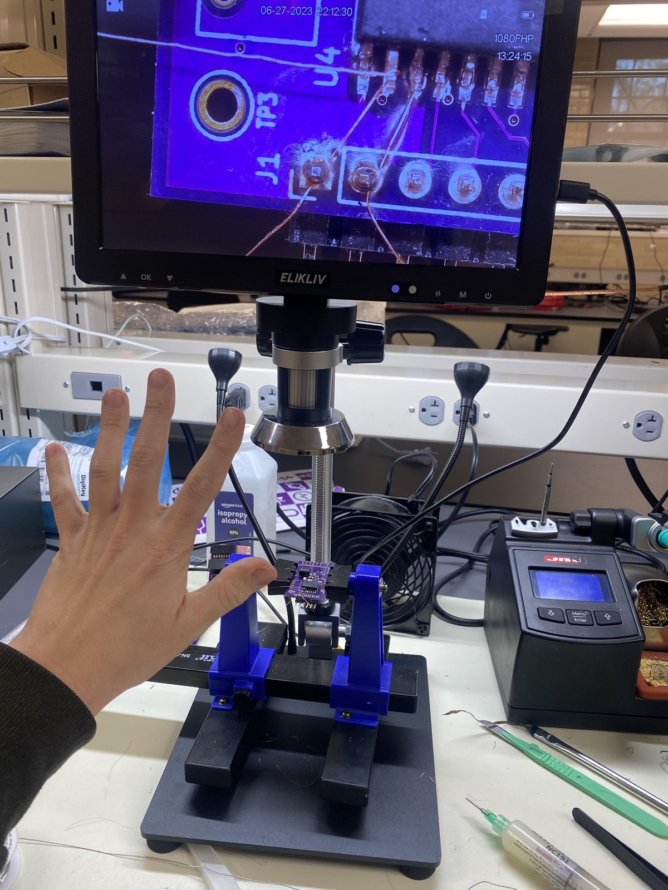
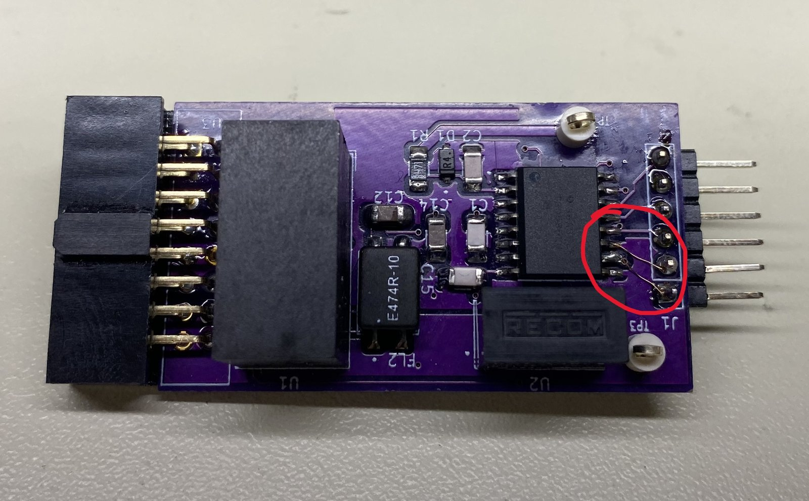
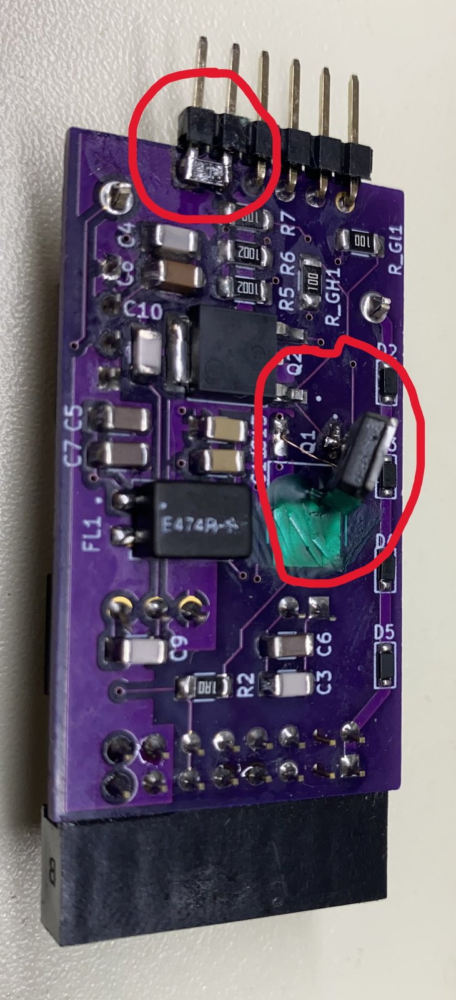
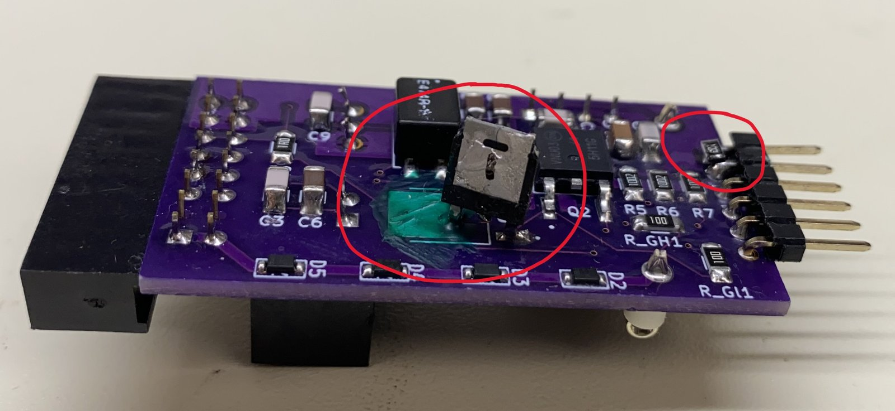
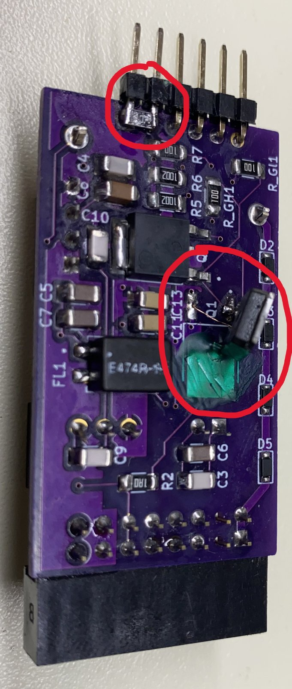
All gate drivers were tested using a function generator and oscilloscope to verify the correct output voltages. After all were tested individually, they were slotted onto the power board. Differential probes were connected to the transistor pairs under test. The power board was then connected to a load and power supply. Switch pairs were activated using a push-button and an Arduino Nano on a breadboard circuit. The load was connected to the oscilloscope using standard probes. A 5 V source into a 1.6 Ohm load was fed into the power circuit with two gates held high. An output of 3 A confirmed the power board is able to pass current to a load. This test also confirmed the action of the switches while powered with the power board. It was run at 5 V, well below the 400–500 V design voltage.
Not photographed was an earlier test to verify whether the Arduino could activate the gate drivers. Initially it was verified by powering LEDs in a sequence proportional to the voltage necessary to turn on the drivers. The test was applied once more to a single driver board and multiple LEDs.
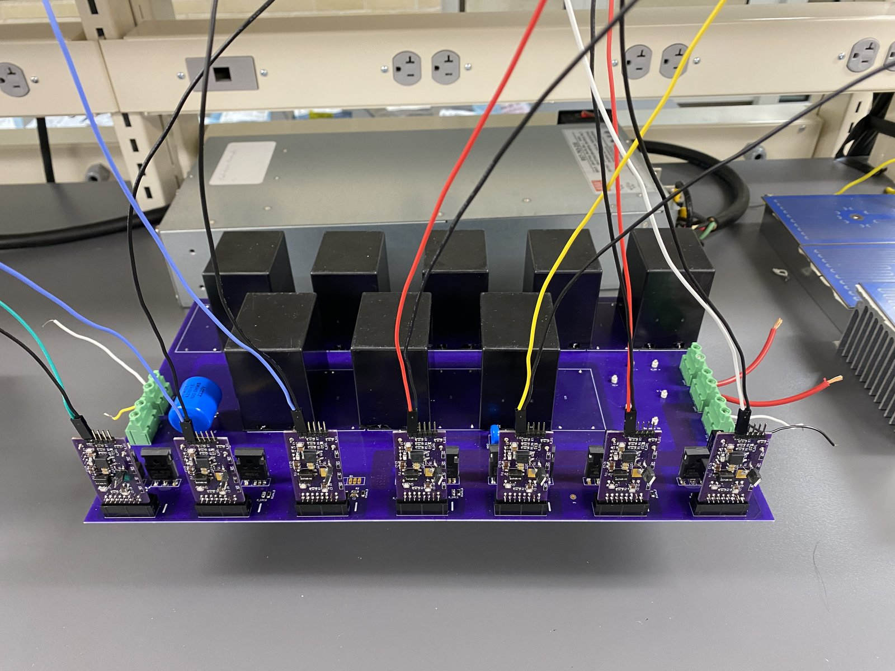
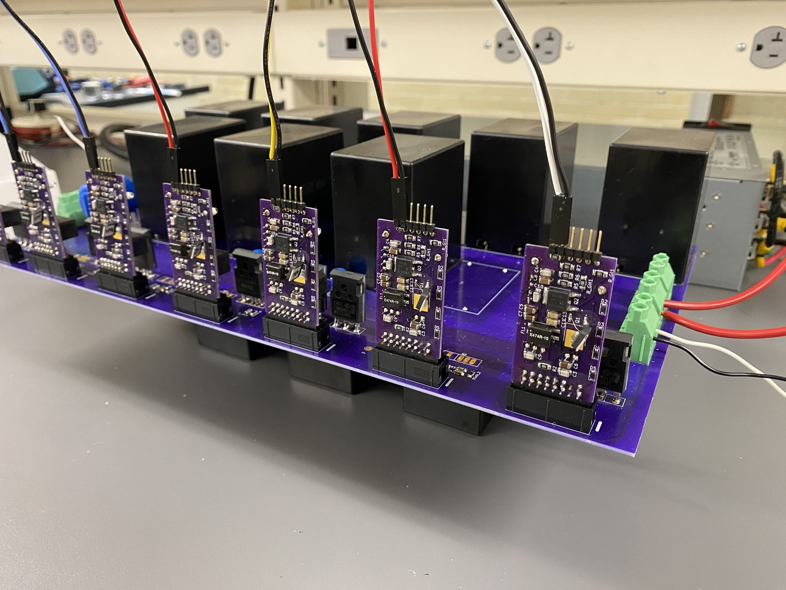
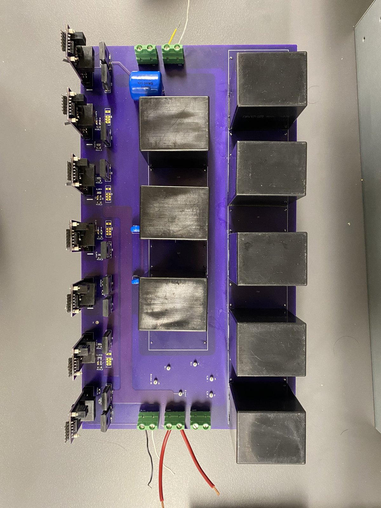
Status & Planned Operating Sequence
As of October 20, 2026, the power board and gate drivers are complete, but I have not had the chance to begin full testing, and I may not be able to test the board. The power board can pass current to the load, and the gate drivers can turn the cascode FETs on and off. A perfboard was soldered together for the Arduino button control to improve the stability of the circuit.
The next phase is to complete the code for the switching sequence. The timing of the switching procedure will be determined using LTspice. By considering the series inductor, capacitor, and load, the time of the first inductor current zero-crossing will dictate when to isolate the current in the capacitive path. The planned sequence is as follows:
- Power is supplied to the power board using two DC sources, one for the gate drives and the other for the power path.
- The bulk capacitor bank is charged via the power path's power supply. Two of the switches are held off to stop the flow through the board. This in effect acts as a gate at the input, allowing the capacitor bank to charge. The charging capacitor bank will give us our necessary instant surge of current to test the breaker performance.
- Once the capacitor bank is sufficiently and safely charged, the DC source is shut off. Of course, the return path of the DC source is never connected, as we don't want the current to feed back into the source return.
- The central capacitor path is now opened, allowing the input capacitor bank to discharge into the inductor and charge the capacitors which will contain the large current.
- Once the inductor current is zero, the switches will close and contain the voltage in the capacitor bank.
- The path will then open to discharge the capacitors into the power resistor, and the circuit will turn on to its normal function state.
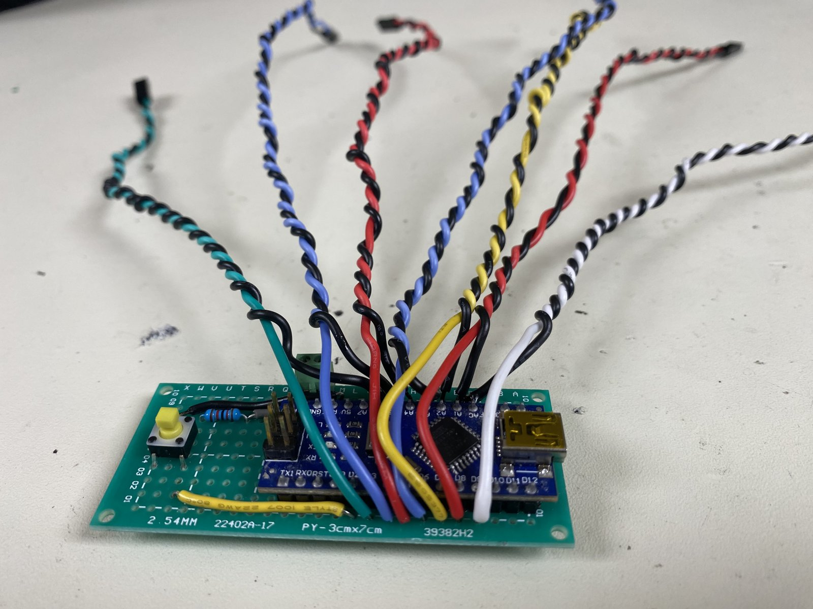